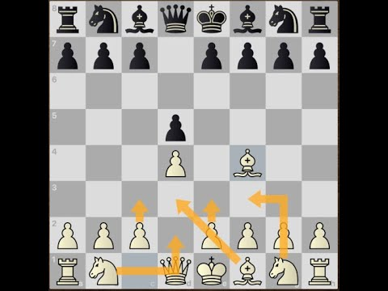

System londyński
System londyński to solidne i elastyczne otwarcie szachowe dla białych, które powstaje po ruchach 1. d4 i 2. Bf4 (lub czasami 2. Nf3 i 3. Bf4). Jest to jedno z najbardziej niezawodnych i uniwersalnych otwarć, które może być stosowane przeciwko różnym odpowiedziom czarnych, takich jak 1. ... d5, 1. ... Nf6 czy nawet 1. ... g6.
Głównym celem systemu londyńskiego jest stabilny rozwój figur oraz kontrola kluczowych pól w centrum, zwłaszcza e5 i d4. Białe zazwyczaj rozwijają swoje figury w sposób następujący: pionek na d4, gońca na f4, skoczka na f3 i d2, pionka na e3, a następnie gońca na d3 lub b2, w zależności od strategii. Roszada jest zwykle wykonywana na krótkie skrzydło, co zapewnia królowi bezpieczną pozycję.
System londyński charakteryzuje się swoją solidnością i odpornością na taktyczne niespodzianki. Białe mają jasny plan rozwoju, który jest stosunkowo łatwy do zapamiętania i nie wymaga obszernej wiedzy teoretycznej. Jest to otwarcie, które może być używane przez początkujących, jak i zaawansowanych graczy, ponieważ oferuje stabilne pozycje i elastyczne możliwości ataku.
Główne zalety systemu londyńskiego to jego prostota i skuteczność. Białe mogą szybko i bezpiecznie rozwijać swoje figury, co pozwala na uniknięcie wielu skomplikowanych wariantów i pułapek, które występują w innych otwarciach. System ten umożliwia białym zachowanie solidnej struktury pionowej i kontrolowanie centrum, co jest kluczowe dla prowadzenia skutecznej gry w szachy.
1
Jednym z popularnych planów białych w systemie londyńskim jest zagranie c3, a następnie rozwinięcie skoczka na bd2 lub c3, co daje solidną bazę do dalszej gry. W zależności od ruchów czarnych, białe mogą atakować na skrzydle królewskim, używając ruchów takich jak h3 i g4, lub na skrzydle hetmańskim poprzez ruchy b4 i a4. Wiele zależy od reakcji czarnych i planów, jakie wybierają w odpowiedzi.
Jedną z wad systemu londyńskiego jest to, że może prowadzić do pasywnych pozycji, jeśli białe nie będą grały aktywnie. Ponadto, jeśli czarne są dobrze przygotowane, mogą odpowiednio zareagować i uzyskać równą pozycję bez większych problemów. Niektórym graczom może również nie odpowiadać brak ostrej taktyki, ponieważ system londyński jest bardziej zorientowany na strategię niż na taktyczne komplikacje.
System londyński był używany przez wielu czołowych szachistów, w tym mistrzów świata, takich jak Anatolij Karpow i Magnus Carlsen. Jego popularność wzrosła w ostatnich latach, głównie dzięki jego niezawodności i łatwości w nauce. Jest to otwarcie, które pozwala na stabilną i pewną grę, dając białym solidne podstawy do przeprowadzenia skutecznych planów i strategii na dalszych etapach partii. Dzięki swojej uniwersalności i elastyczności, system londyński pozostaje jednym z najczęściej wybieranych otwarć w szachach zarówno na poziomie amatorskim, jak i profesjonalnym.
